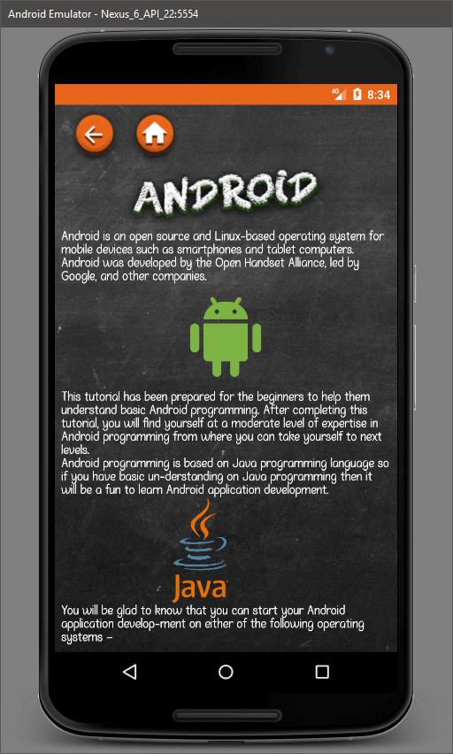
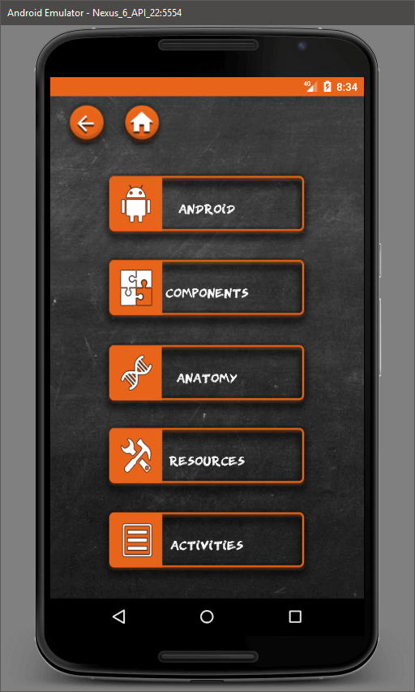
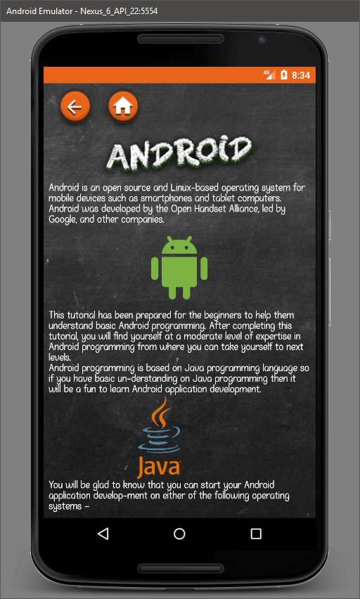
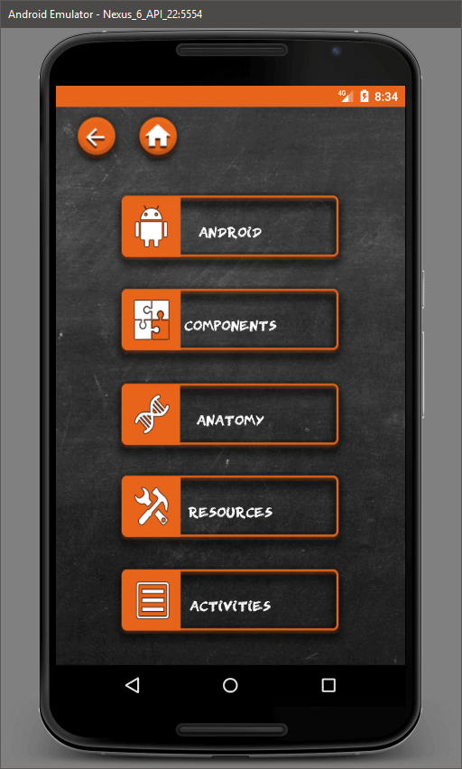

Aim:
During my time studying at Coleg Gwent, South Wales I was tasked with producing a basic webpage for one of my assignments within the Web Development module.
The site I had chosen to develop was a fictional concept of Britain having its own space agency similar to NASA.
Time Period:
Given this was an assignment at an educational facility the time frame was based around the academic year, starting from the beginning of September and ending in the following June.
The average amount of time to produce the site was roughly a two-three weeks in total due to working on it during the scheduled hours at college.

Design:
The design process was very simple due to how basic the page needed to be and being my intro into the world of Web design or Front end development.
The main purpose of this design was to demonstrate an understanding of containers and the box-model template.
Nav:
The navigation bar on this design was pre-generated form a site we were directed to by our lecturer. This was mainly to save time and wasn’t necessarily the main focus of the assignment.
However, this does leave a lot of inconsistencies on the site such as how it doesn’t blend in with the colour scheme at all.
Layout:
With layout being a crucial point, the site was developed around using the box-model template with a header, main content container and footer each clearly visible by their contents.
With an image in the header and footer and then laying out the main content within the body section. A very simplistic design, but it works.
Layout Responsiveness:
The idea of developing for mobile at the time had absolutely zero reference to me and would most likely have seemed to be an impossible task given the amount of knowledge I had at the time.
Colours:
The colour scheme had no general direction other than looking space-like. However, this did lead to all text and crucial parts of the page being clearly visible to a user.
Alongside this, the site does follow a theme with bold/blue headings and paragraphs using white text.
Stand Out Features:
- Working calendar
- A functioning navigation bar
- Windows that are scrollable inside
- A working contact form
- Interactive map via Google

Design Process Summary:
Given this project was an educational one and was developed at the very start of my introduction to web development,
I’d say it has many aspects that need to be improved but as a first effort I was very satisfied with the outcome and it led me to developing a couple more sites that would later be used commercially.
Nav:
First thing to replace would be the navigation bar, simply due to it not being my own creation and its doesn’t quite fit with the rest of the site. Flow is key, and without it the site becomes very static and blocky looking.
Responsiveness:
Now that I’ve dealt with more challenging projects and delved into the basics of mobile design, I’d say the site needs to be brought into the 21st century with a mobile friendly design.
Layout:
The site has a simple box model that works as intended however, the finer details such as image placement and text alignment needs more tinkering to be more tight within their containers and to give correct spacing/padding.
As a whole, the site would need to be developed from the ground up with a simple design board, concepts and schemes to help create a balanced design.


 


